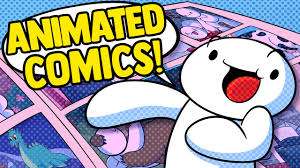
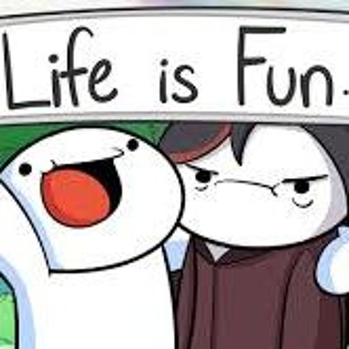
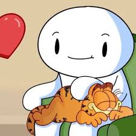

About Odd1sOut
Odd1sOut -- pronounced "The odd ones out" -- is a cartoon character by a young American named James Rallison, representing himself

Most of his work is in the form of youtube videos. But he also creates cartoon books and sells cool merchandise too!
Odd1sOut Characteristics

- Tells stories about his childhood
- Doesn't appear human
- Comes from a big, close-knit family with lots of animals
- Loves nature and observing the world
- Spends a lot about his work making sandhwiches at Soubway

Friends
Odd1sOut has a wide cirle of animator friends he meets at conferences and online